Taming Video Diffusion Models for Panoramic 4D Scene Generation
1 Peking University, 2 Peng Cheng Laboratory, 3 Harbin Institute of Technology
(* Equal Contribution, ✉ Corresponding Author)
The rapid advancement of diffusion models holds the promise of revolutionizing the application of VR and AR technologies, which typically require scene-level 4D assets for user experience. Nonetheless, existing diffusion models predominantly concentrate on modeling static 3D scenes or object-level dynamics, constraining their capacity to provide truly immersive experiences. background To address this issue, we propose HoloTime, a framework that integrates video diffusion models to generate panoramic videos from a single prompt or reference image, along with a 360-degree 4D scene reconstruction method that seamlessly transforms the generated panoramic video into 4D assets, enabling a fully immersive 4D experience for users. Specifically, to tame video diffusion models for generating high-fidelity panoramic videos, we introduce the 360World dataset, the first comprehensive collection of panoramic videos suitable for downstream 4D scene reconstruction tasks. With this curated dataset, we propose Panoramic Animator, a two-stage image-to-video diffusion model that can convert panoramic images into high-quality panoramic videos. Following this, we present Panoramic Space-Time Reconstruction, which leverages a space-time depth estimation method to transform the generated panoramic videos into 4D point clouds, enabling the optimization of a holistic 4D Gaussian Splatting representation to reconstruct spatially and temporally consistent 4D scenes. To validate the efficacy of our method, we conducted a comparative analysis with existing approaches, revealing its superiority in both panoramic video generation and 4D scene reconstruction. This demonstrates our method's capability to create more engaging and realistic immersive environments, thereby enhancing user experiences in VR and AR applications.
The rapid advancement of diffusion models holds the promise of revolutionizing the application of VR and AR technologies, which typically require scene-level 4D assets for user experience. Nonetheless, existing diffusion models predominantly concentrate on modeling static 3D scenes or object-level dynamics, constraining their capacity to provide truly immersive experiences. background To address this issue, we propose HoloTime, a framework that integrates video diffusion models to generate panoramic videos from a single prompt or reference image, along with a 360-degree 4D scene reconstruction method that seamlessly transforms the generated panoramic video into 4D assets, enabling a fully immersive 4D experience for users. Specifically, to tame video diffusion models for generating high-fidelity panoramic videos, we introduce the 360World dataset, the first comprehensive collection of panoramic videos suitable for downstream 4D scene reconstruction tasks. With this curated dataset, we propose Panoramic Animator, a two-stage image-to-video diffusion model that can convert panoramic images into high-quality panoramic videos. Following this, we present Panoramic Space-Time Reconstruction, which leverages a space-time depth estimation method to transform the generated panoramic videos into 4D point clouds, enabling the optimization of a holistic 4D Gaussian Splatting representation to reconstruct spatially and temporally consistent 4D scenes. To validate the efficacy of our method, we conducted a comparative analysis with existing approaches, revealing its superiority in both panoramic video generation and 4D scene reconstruction. This demonstrates our method's capability to create more engaging and realistic immersive environments, thereby enhancing user experiences in VR and AR applications.
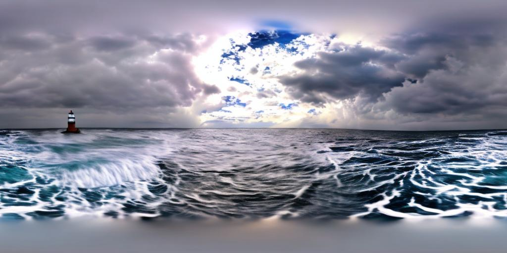
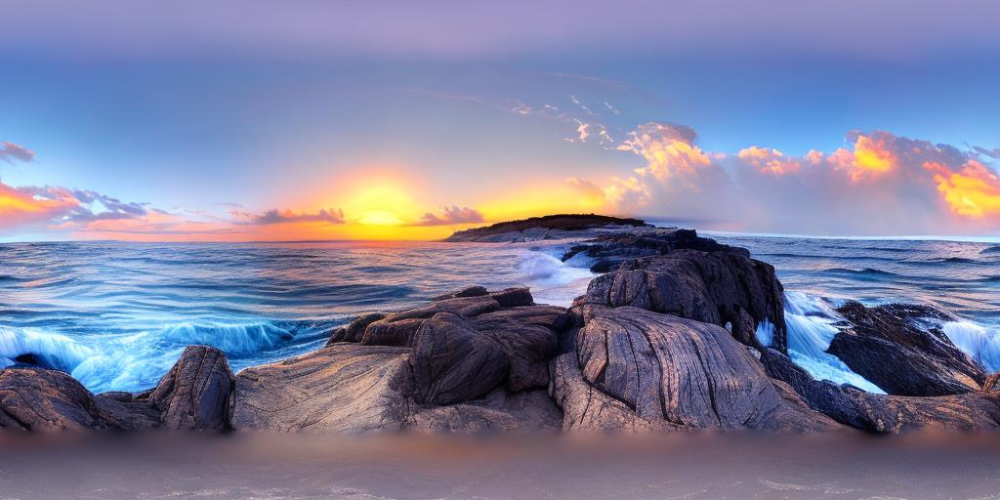
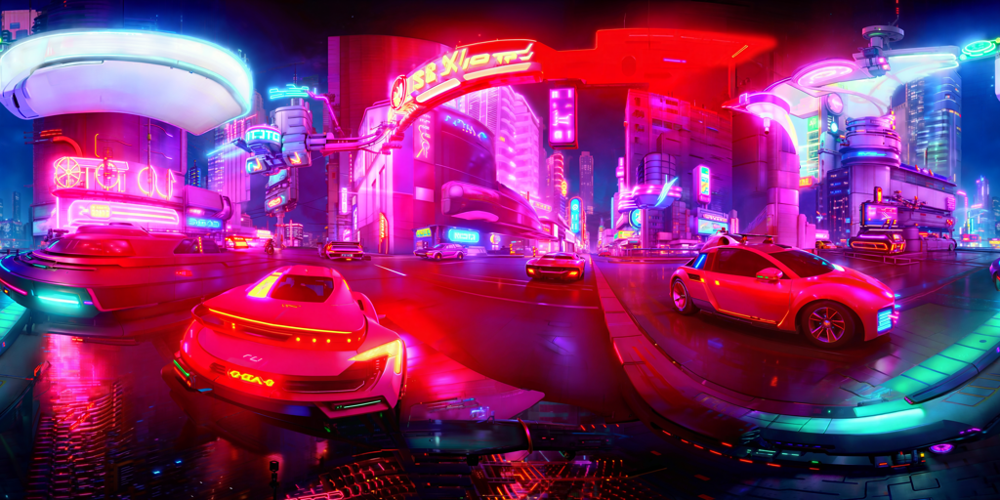
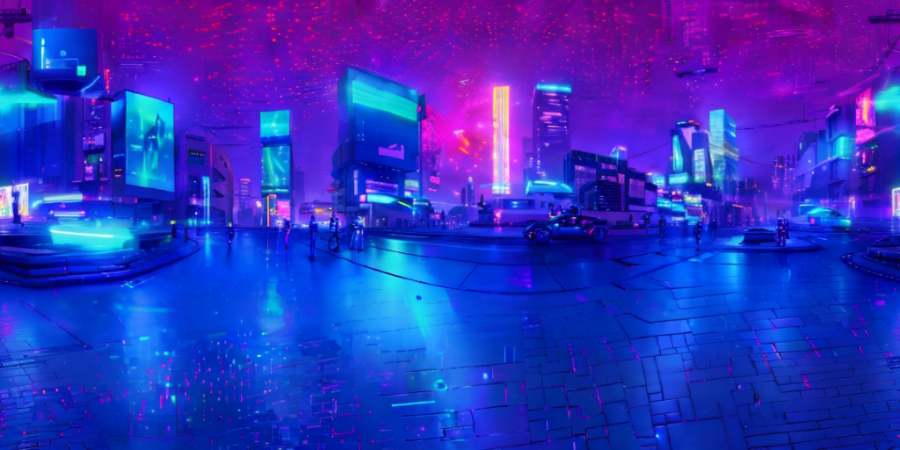
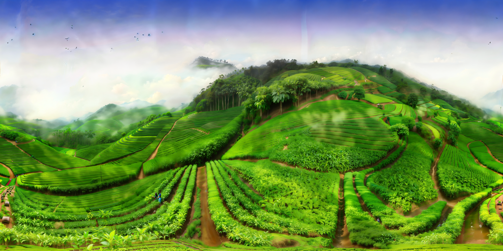
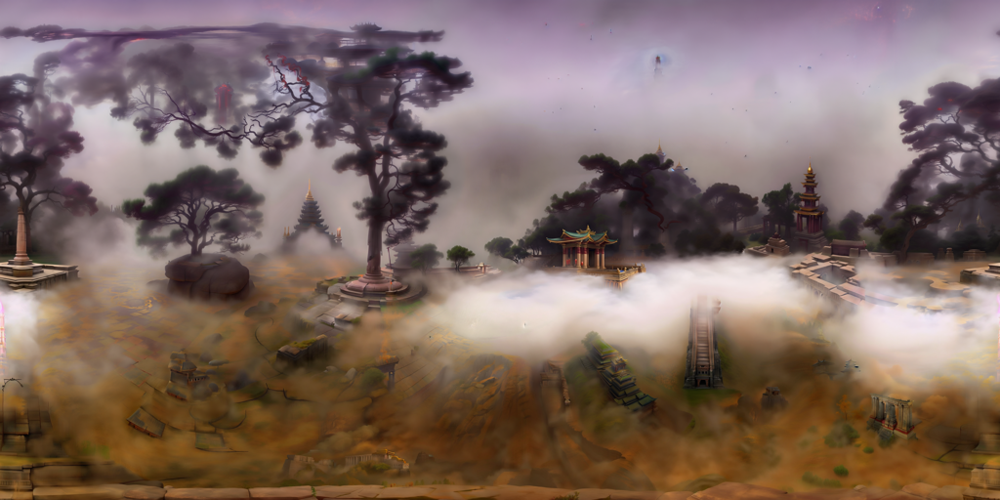
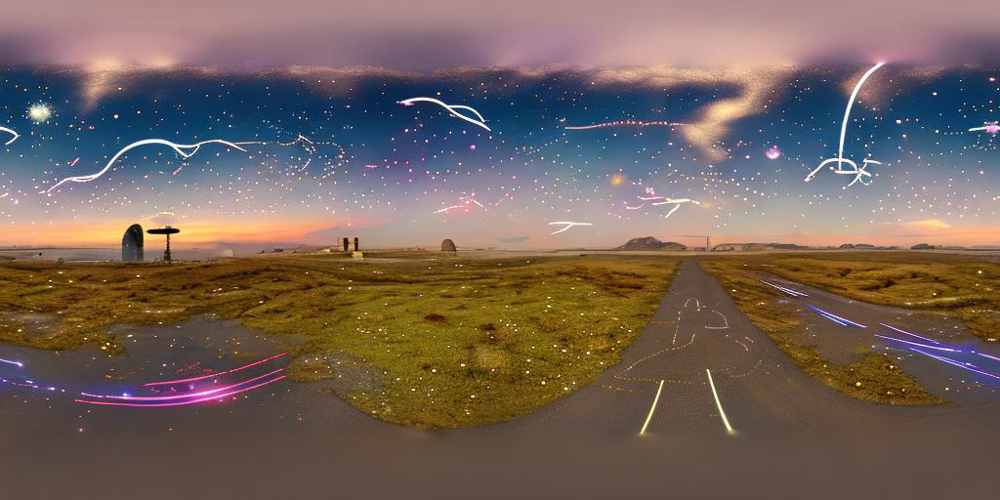
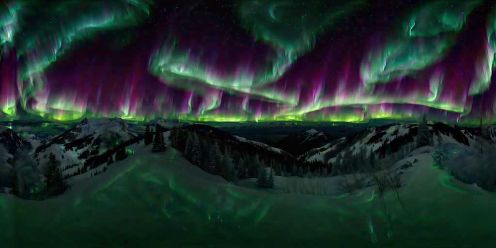
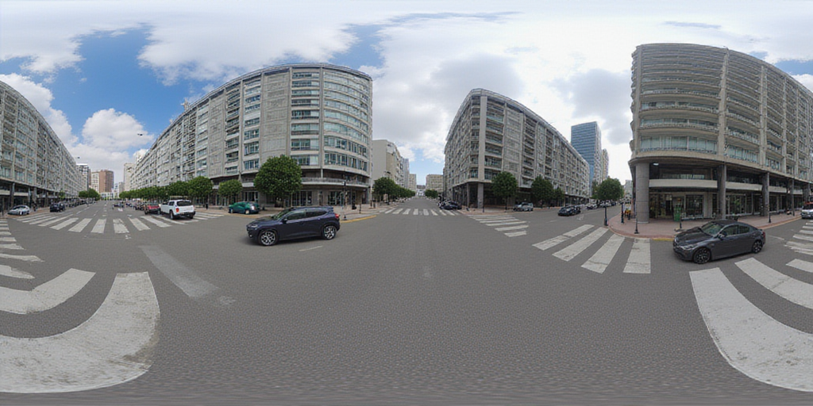
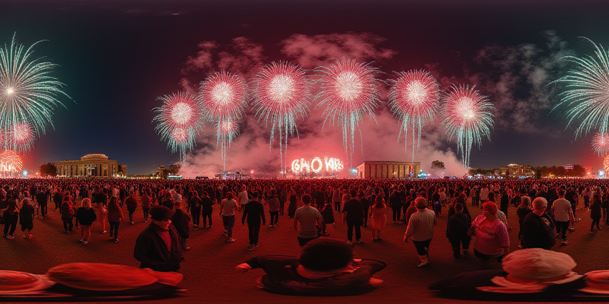
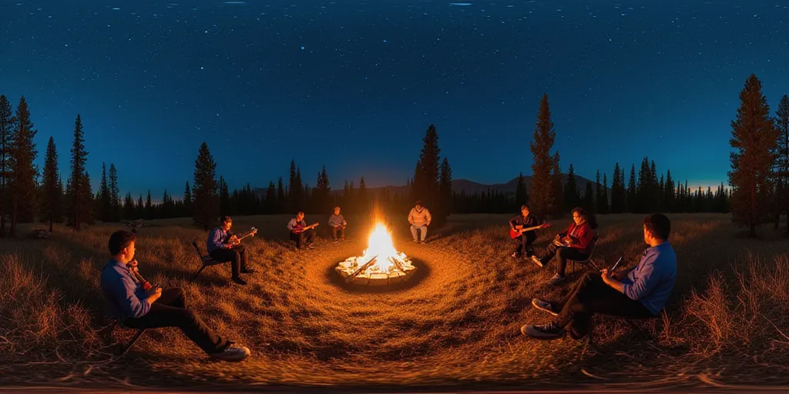
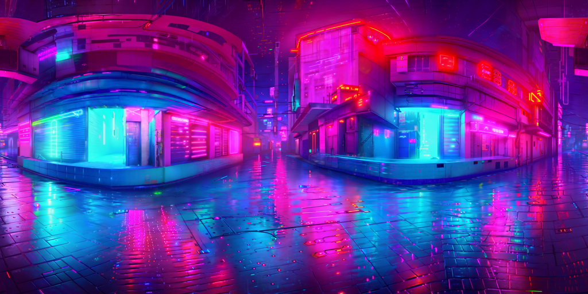
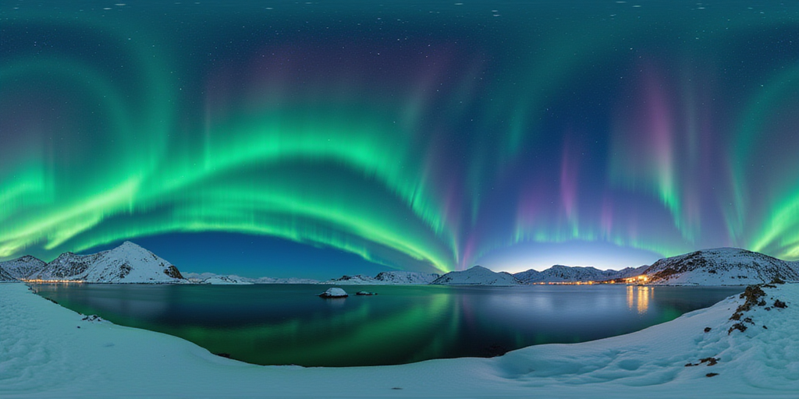
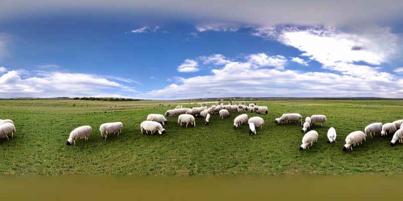
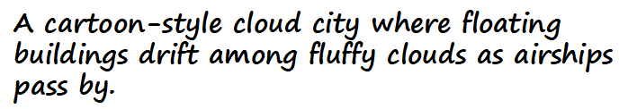
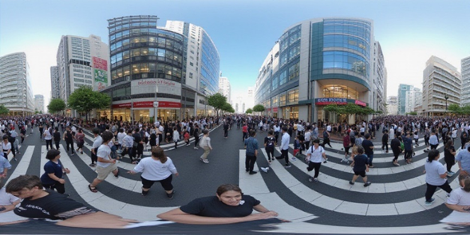
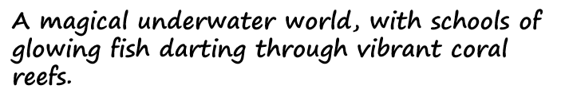
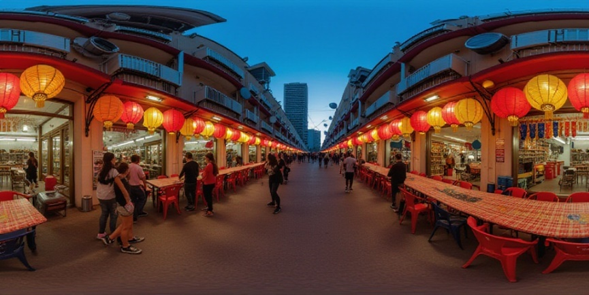
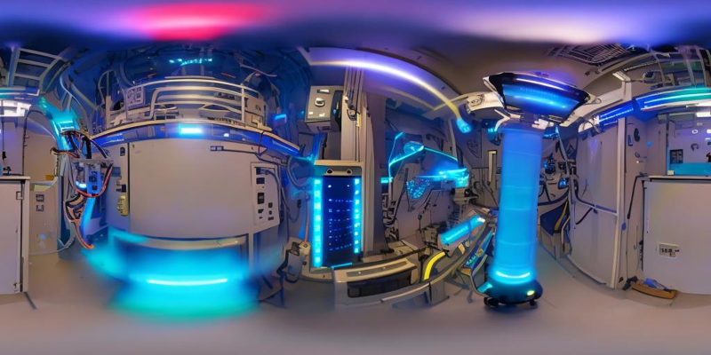
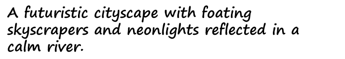
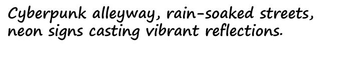

Overview of HoloTime. Beginning with a user-provided or model-generated panoramic image as input, we first use the Panoramic Animator to generate panoramic videos in two stages. The guidance model generates a coarse video in the first stage, which is then refined by the refinement model in the second stage, creating the final panoramic video for 4D reconstruction. Subsequently, we perform Panoramic Space-Time Reconstruction to lift the panoramic video to a 4D scene. We employ optical flow for space-time depth estimation to achieve spatial and temporal alignment, thus obtaining a 4D initialized point cloud.
@article{tan2024imagine360,
title={Imagine360: Immersive 360 Video Generation from Perspective Anchor},
author={Tan, Jing and Yang, Shuai and Wu, Tong and He, Jingwen and Guo, Yuwei and Liu, Ziwei and Lin, Dahua},
journal={arXiv preprint arXiv:2412.03552},
year={2024}
}